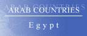

The Country & People of Egypt
This page contains links to sites in Egypt and Egypt related sites.
For Middle East, North Africa, Arab and regional information visit Arab Countries
Hints:
- Use the "FIND" function in the Edit menu of your browser to search the page
- Use translating services in Chrome or Bing Bar in Internet Explorer to view page and/or linked websites in your language
General Info
* Business
* Culture
* Education
* History
* Media
* Organizations
* Travel
* Gateways
* Arab Countries
Egypt, Arab. Misr, officially Arab Republic of Egypt, republic (2005 est. pop. 77,506,000), 386,659 sq mi (1,001,449 sq km), NE Africa, bordered by the Mediterranean Sea (N), Israel and the Red Sea (E), Sudan (S), and Libya (W); the Sinai peninsula, the only part of Egypt located in Asia, is separated from the rest of the country by the Suez Canal. Major cities include Cairo (the capital) and Alexandria. The principal physiographic feature is the Nile R., which flows the length of the country from south to north and separates the Libyan (Western) and Arabian (Eastern) deserts that comprise 90% of the land area. Bordering the Nile between Aswan and Cairo are narrow strips of cultivated land, home of the vast majority of Egypt's inhabitants. Although the country's industrial base increased considerably in the 20th cent., the Economy has been severely strained by Egypt's limited farmland and its large and rapidly growing population. Agriculture, which Employs about 40% of its population, depends on the Nile for its fertility. Completion of the Aswan High Dam in 1970 greatly increased arable land, which still constitutes less than 5% of Egypt's total land area. Cotton is the leading cash crop. Major manufactures include refined oil, chemicals, textiles, and processed foods. The Suez Canal and tourism are sources of foreign Exchange. Egypt's inhabitants are mainly a complex racial mixture, descended from the ancient Egyptians, Berbers, sub-Saharan Africans, Arabs, Greeks, and Turks. The majority are Sunni Muslims, but there is a substantial minority of Coptic Christians. Arabic is the official language.
Ancient Egypt
Egyptian civilization, one of the world's oldest, developed in the valley of the Nile over 5,000 years ago. The rival kingdoms of Upper and Lower Egypt were united as a centralized state 3200 BC; by a king named Menes, who Established his capital at Memphis. A high culture developed Early, and the use of writing was introduced. During the Old Kingdom (3110–2258 BC;) Egyptian culture and commerce flourished, and the great pyramids were built. Its fall introduced a period of anarchy, which Ended 2000 BC; with the Establishment of the Middle Kingdom, with its capital at Thebes. Civilization again flourished until in 1786 BC; weak rulers allowed the country to pass under the rule of foreign nomads, known as the Hyksos. The Hyksos were Expelled 1570 BC;, and the New Kingdom was Established. During the XVIII dynasty (1570–1342 BC;) ancient Egyptian civilization reached its zenith; a vast Empire was Established and Thebes and Memphis became the political, commercial, and cultural centers of the world. After the XX dynasty (1200–1085 BC;) Egypt came increasingly under foreign domination, with periods of rule by Libya, Sudan, Assyria, Nubia, and Persia. Following a brief reestablishment of native power in 405 BC;, Egypt fell without a struggle to Alexander the Great in 332 BC; After Alexander's death (323 BC;) Egypt was inherited by his general, Ptolemy, who founded the dynasty of Ptolemies and under whom the new city of Alexandria became the intellectual and religious center of the Hellenistic world. The Ptolemies maintained a formidable Empire for more than two centuries until, weakened by internal dynastic disputes, Egypt fell to Rome in 30 BC; Christianity was readily accepted in Egypt, which became part of the Byzantine Empire about AD; 395. With the Arab conquest (639–42) Egypt became an integral part of the Muslim world.
Modern Egypt
After 500 years as part of the caliphate, Egypt was seized by the Mamluks in 1250 and the Ottoman Turks in 1517. The first close contact with the West occurred in 1798, when French forces under Napoleon occupied the country; they were Expelled in 1801 by combined Ottoman and British troops. In 1805 Muhammad Ali, a common soldier, was appointed pasha of Egypt; under his rule the foundations of the modern state of Egypt were Established. The construction of the Suez Canal (1859–69) put Egypt deeply into debt, and, although nominally still part of the Ottoman Empire, the country was forced to appoint a French-British commission to manage its financial affairs. The British consolidated their control between 1883 and 1907, and during World War I, when Turkey joined the Central Powers, Great Britain declared Egypt a British protectorate, which Effectively persisted for some years after independence in 1923.
Independent Egypt
Egypt bitterly opposed the UN partition of Palestine in 1948 and played an important role in the Arab-Israeli Wars that followed.
In 1952 the Egyptian army deposed King Farouk in a coup; a republic was established in 1953, and Col. Gamal Abdel Nasser became president (1954).
For a brief period Egypt and Syria merged (1958) in the United Arab Republic, then were joined by Yemen in the United Arab States; the union was dissolved in 1961. Inaugurating a program of economic and social reform, modernization of the army, and construction of the Aswan High Dam, Nasser, with the aid of the USSR, strove to make Egypt the undisputed leader of the Arab world. His rallying cry was denunciation of Israel; in 1967 Egypt lost much territory in the Six-Day War, which also shattered its economy and armed forces.
Nasser died in 1970 and was succeeded by Anwar al-Sadat, who regained some of Egypt's lost territory in the Yom Kippur War (1973) and reversed a 20-year trend by ending Soviet influence and seeking closer ties with the West.
In 1977 Sadat angered his Arab allies by traveling to Jerusalem as a conciliatory gesture to Israel; the two nations signed a peace treaty in 1979.
In 1981 Sadat was assassinated by Muslim fundamentalists, and Hosni Mubarak, who pledged to continue Sadat's policies, became president. The Israeli withdrawal from the Sinai and its return to Egypt, which began in 1979, was completed in 1982.
Egypt provided troops for the U.S.-led coalition in the Persian Gulf War (1991). In the late 1980s and the 1990s Muslim fundamentalists increasingly opposed the government, and some 1,200 people were killed by militants between 1992 and 1997.
In 1999, Mubarak was returned to office for a fourth six-year term. Poverty is the nation’s most pressing problem, but the government has failed to undertake significant economic reforms; social inequities have heightened societal tensions, and authoritarian rule has fostered corruption.
Islamic militancy and terrorism, most dramatically demonstrated in recent years by the Oct., 2004, July, 2005, and Apr., 2006, bombings of several Sinai resorts, also remain challenges to Egypt’s government, as do liberal reformers who have become more vocal and move visible in calling for constitutional reform.
In Feb., 2005, Mubarak called for a constitutional amendment to permit the direct election of the president from among a multiparty slate, but the restrictions in the amendment on who might run prevent the contest from being open to all challengers. After passage by parliament, the amendment was approved (May) in a referendum whose results were denounced as fraudulent by the opposition. At the same time, however, the government was trying Ayman Nour, a leading opposition figure, on charges that his lawyers claimed were fabricated in an attempt to derail his presidential candidacy. In the election in September, Mubarak was reelected and Nour placed second. Observers said that the election was marred by irregularities but also that they would not have affected the result; the turnout was only 23% of the nation's voters. In the subsequent (November-December) parliamentary elections the government secured a more than two thirds of the seats, but candidates aligned with the Muslim Brotherhood won roughly a fifth of the seats a record number. The voting was marred by violence and intimidation that seemed clearly directed by the government at opposition voters.
In Dec., 2005, Nour was convicted on charges related to the forgery of signatures on electoral petitions, which most nongovernment observers regarded as improbable, and was sentenced to five years; he was released for health reasons in Feb., 2009.
In 2006 there was increasingly vocal public support for establishment of a truly independent judiciary, as protestors rallied in in May support of two judges who had called for reform and faced dismissal for having criticized the presidential election. the police violently suppressed the rallies, however, and the reforms that were passed in June were widely criticized as inadequate.
In Mar., 2007, a referendum approved amendments to the constitution, earlier approved by parliament, that were generally regarded as antidemocratic (one of the amendments replaced judicial supervision of elections with an electoral committee, another banned religious-based parties). The government claimed that roughly a quarter of the electorate voted, but several independent groups estimated the turnout at roughly 5%, and they and opposition groups accused the government of vote rigging. The following month Amnesty International accused Egypt of systematic human-rights abuses and as acting as an international center for abusive interrogation and prolonged detention in the "war on terror." Elections in June for seats in parliament's upper house, which the governing party handily won, were marred by police interference and vote rigging. Subsequently in 2007 the government launched a crackdown on the Muslim Brotherhood.
The June, 2010, upper house elections were also marred by electoral abuses; nearly all the seats were won by the governing party. The 2010 upper house (June) and subsequent lower house (November–December) elections were also marred by electoral abuses and irregularities; most of the seats were won by the NDP, and nearly all opposition parties called for a boycott of the second round of the lower house elections.
In early 2011, young Egyptians, inspired by events in Tunisia that led to the ouster of its entrenched president, mounted massive nonviolent anti-Mubarak demonstrations, most prominently in Cairo but also in other cities. Over 18 days the protesters won the support of major opposition figures and groups while surviving a number of government moves against them, including violence that killed more than 800 people and injured several thousand. The army largely remained on the sidelines and, in the face of growing protests, finally forced Mubarak to resign.
Slow progress toward reforms and a new government—elections were ultimately scheduled for Nov., 2011–Feb., 2012—and concerns about the military government, led at times in the second half of 2011 to significant new protests in Cairo and other cities. In August, Mubarak was put on trial on charges of corruption and of ordering the killing of protesters. The elections for the lower house of parliament resulted in a significant victory for the Muslim Brotherhood's Freedom and Justice party (FJP).
Mohamed Morsi, the Muslim Brotherhood candidate, was elected president after a runoff in late June, 2012. Before the runoff, however, the supreme court ruled that the newly elected parliament had to be dissolved because many members had been elected illegally, and the military government subsequently declared a new interim constitution that severely restricted the president's powers and reserved legislative powers to the military government until after a new parliament was elected. In July, President Morsi decreed that parliament be recalled, but the supreme court overturned his decree. In August a new government, consisting mainly of Islamists and technocrats, was appointed by Morsi. Morsi also ordered the retirement of Tantawi and the army chief of staff, ended the restriction on presidential powers, and assumed legislative powers.
In November a new presidential decree gave Morsi essentially unchecked power, sparking demonstrations against him by liberals and others who saw him as a new dictator and clashes between them and Morsi's supporters; parts of the decree were later rescinded.
Jan., 2013, was marked by violent protests, and the following month Morsi called for parliamentary elections in April. Meanwhile, the constitutional court rejected parts of the election law, and then the secular parties announced a boycott of the vote. In March, however, the elections were canceled as a result of a court decision that returned the election law to the constitutional court for review. In April, Islamists sought to force the retirement of older members of the judiciary, who were seen as opponents of Islamist rule; this led to new protests and tensions.
The constitutional court ruled in June that the interim parliament and the constitutional assembly had been illegally elected, but it left the constitution in effect. Massive demonstrations against Morsi in late June and early July, and clashes between Morsi opponents and supporters, led to a military ultimatum calling for the government and opposition to resolve the crisis; subsequently the president was ousted by the military.
Muslim Brotherhood supporters protested Morsi's overthrow, leading to recurring clashes with security forces; in August, hundreds died and several thousand were injured when two pro-Morsi protest camps were stormed. Muslim Brotherhood leaders were arrested and charged with inciting violence; the organization was later banned. Islamist militant attacks on security forces and on Coptic churches also increased in the aftermath of Morsi's ouster. A number of prodemocracy activists were also arrested and jailed. A new constitution, which drafted in Dec., 2013, and again preserved the military's powers and independence, was approved by voters in Jan., 2014; the turnout was somewhat larger (38.6%) but nearly all votes (98%) were in favor of the constitution.
In Mar., 2014, Sisi resigned from the army and the cabinet in order to run for president. He overwhelmingly won the May election against weak opposition, but many Islamists and liberal and secular activists boycotted the vote. In the delayed parliamentary elections, which were finally held in Oct. and Dec., 2015, individuals and parties aligned with the president won a significant majority of the seats; turnout was relatively low in both rounds.
********
Copyright (c) 2012 Columbia University Press.
Used by permission of Columbia University Press.
General Info
Cities, towns, municipalities, places, flag, maps, useful Information....
Business
Economy, reports, statistics, banks, directories, jobs, investment, promotion....
Culture
General resources, heritage, art, literature, photography, cinema, music, song, dance, cultural, scientific, environmental, health, sporting entities & info....
Education
Schools, colleges, academies, universities, polytechnics, institutions, research, resources, projects....
History
Ancient & modern history, human rights, politics & political parties, related sites, articles....
Media
Newspapers, magazines, news, newsletters, news agencies, radio, TV, internet, articles, reports, cartoons....
Organizations
Government, ministries, overseas missions, embassies, corporations, organizations, industrial entities, centers, public hospitals, institutions,
societies, foreign entities....
Travel
Airlines, air, sea & coach charters services, travel, tours, guides, hotels, resorts, inns, hostels, health, travel tips, weather....
Gateways
Gateways, search engines and directories to country related sites and information....
Arab Countries
Arab World: Middle East, North Africa, Arab and regional information. Resources to other Arab countries....
About Egypt
General Information Also see Travel
- All Referer Earth & environment, history, literature & arts, people, places, plants & animals, religion, science & technology, sports & everyday life....
- AME Info Geography, people, government, economy, communication, transportation
- ArabInfo Overview, government, history, links
- ArabNet Overview, history, geography, business, culture, government, transport, tour guide, links
- Atlapedia Geography, climate, people, demography, religion, education, modern history, currency, other information....
- BBC Country Profile Key facts, figures and dates
- Britannica.Com Country info, land, people, economy, society, government, history, culture, maps, statistics, links....
- CIA World Factbook Map, geography, people, government, economy, communications, transportation, military, issues
- Country Reports Economy, defense, geography, government, people, anthem, map, news, weather, links....
- Encarta OnLine Info, land & resources, population, economy, government, history, other related items, links....
- Encyclopaedia of the Orient Geography, politics, economy, health, education, religion, people, history, anthem, cities....
- Expedia Almanac, fast facts, communications, on business, health & safety, transportation, traveler's directory
- Focus OnLine Egypt - The Land of Pharaohs. general info, regions, tourism, cuisine, music, maps....
- Geographia.Com Exploring Egypt, location, geography, climate, history, culture
- Info Please General info, map, geography, government, history, land & people....
- Little Horus Kids Web Site - About Egypt today, where to go, history, Fun Corner Club
- Love Egypt Egypt, its ancient history, prehistory, modern history, articles, tips, fantastic Videos and great music....
- MidEast.Com Good info + Cairo, Alexandria, Aswan, Sharm El-Sheikh, Fayoum, Mersa Matrouh, Luxor, Minya
- Nation By Nation Info, government, human rights, news, geography, history, people, links....
- US Library of Congress Everything you ever wanted to know about Egypt....
- World66 General info, cities, history, people, economy, getting around, getting there, links....
Cities, Towns, Municipalities & Places
- El Gouna A resort town nestled between sienna mountains and azure waters of the Red Sea
- Hurghada One of the best Egyptian tourist destinations
- Matrouh Economic , tourist , historical and archaeological information, investment chances, businesmen services
- Port Said Jewel of the Suez Canal
- Red Sea Red Sea, Dangerous Animals, Snorkelling And Scuba, Underwater photography, Coral Reefs, Field Guide
- Red Sea Governrate
- Sinai History, culture, national parks, dive sites, life of the Red Sea....
- Sinai Parks Friendly guide to Sinai and the Red Sea
- South Sinai Governrate Long beaches, high mountains, natural protective areas....
- St Katherine Monastery and the Sinai High Mountain Region - Origins, The Protectorate, Activities
- Suez Canal An artificial waterway running north to south. Guide to Egypt
- Suez Governrate A unique geographical position, civilian and military characteristics
- Valley of the Kings Discover each tomb in the Valley
- World Heritage Cities Islamic Cairo - Illustrates the Fatimid conception of urban planning
- World Monuments Endangered sites: Khasekhemwy at Hierakonpolis, Edfu
- World Monuments Endangered sites: Valley of the Kings, Thebes
- World Monuments Endangered sites: Mortuary Temple of King Ahmenhotep III, Gurna
- World Monuments Endangered sites: Sultan Al Muayyad Hospital, Cairo
- World Monuments Endangered sites: Sultan Qu'itabay complex, Cairo
- World Monuments Endangered sites: Valley of the Kings, Thebes
- World Monuments Endangered sites: White and Red Monasteries, Sohag
Flag, Maps, Emblems and other information....
- Cellular News Cellular coverage map, systems, frequencies....
- Egyptian Stamps History, gallery, collectors' corner....
- Ethnologue Languages
- Flag Description, meaning, history, interesting facts
- Flag Explanation, historical, military & political flags, subdivisions, national emblem....
- World Atlas A brief description, fast facts, flag, landforms, maps, traveller info, weather
- World Clock Local time, sunrise, sunset, GMT offset, daylight saving....
- World Paper Money Paper currency since 1926
General Info
* Business
* Culture
* Education
* History
* Media
* Organizations
* Travel
* Gateways
* Arab Countries
Business and Economy
General, Economy, Reports & Statistics
- Alexandria Business Association Provide networking opportunities, consolidate business and social ties
- American Chamber of Commerce in Egypt The first, largest and most active American Chamber in the Middle East
- Australian Department of Foreign Affairs and Trade Fact sheet, travel information, trade watch....
- Bilateral Relations with Japan Diplomatic, investment, economic cooperation, residents....
- British Egyptian Business Association (BEBA) Primary resource for members to achieve success in the business economy
- Business Etiquette and Culture A guide for doing business ....
- Chamber of Food Industries (CFI) Providing scientific research, advanced technical expertise and information
- Cairo & Alexandria Stock Exchanges Statistics, contacts, FAQs, links....
- Capital Market Authority (CMA) Responsible for securing a transparent and credible market for investors in Egypt
- Egypt and the IMF Position in the fund, reports....
- Egyptian Capital Market Association Advancement of the economy and providing investment opportunities to the public
- Egyptian Capital Market Stocks Quotes Porfolio, mutual funds, useful info, broker directory....
- Egyptian International Trade Point e-Business, e-Directory, staistics, facilities, trade info, list of industrial cities....
- 10th of Ramadan Trade Point >
- Badr Trade Point >
- Kafr El Shiekh Trade Point
- Mansoura Trade Point
- Egyptian Maritime Data Bank (EMDB) Info systems, services, Egyptian ports....
- Export from Egypt Provides information and services relevant to exporting activities
- Italian Chamber of Commerce – Egypt Promoting and developing commercial, industrial and other various forms of cooperation
- MBendi Business information, news, industries, events
- Middle East Regional Veterinary Information System Livestock & production data in Egypt
- Misurata Chamber of Commerce & Industry (MCCI) To reach the objectives of local economic and social development....
- Muslim Trade Network Trade reference directory and guide....
- Ports Focus Ports, harbours, marinas....
- Project Evaluation and MacroEconomic Analysis (PEMA) Conducting a systematic evaluation of foreign aid projects in Egypt
- Small, and Medium-Sized Enterprises A dynamic force for export development, sustained economic growth and job creation
- US Department of Energy Analysis, information, oil, natural gas, coal, electricity....
- US Department of State Country commercial guide 2001 (pdf)
- US Department of State Country reports on economic policy and trade practices - 1999
- World Bank Overview, news & events, data & statistics, publications & reports, development topics, projects & programs, Public Information Center
- World Trade Organization - WTO
Provides trade statistics, goods schedules, services schedules and MFN exemptions, trade policy reviews, dispute cases, and notifications
Banks
- Central Bank of Egypt Formulating monetary , credit , & banking policy and supervising its implementation
- Egyptian American Bank Offers a wide range of banking and financial services
- Egyptian Saudi Finance Bank Its activities are in compliance with principles and rules of Islamic Sharia
- National Bank of Egypt Building up expertise in many new products area....
- Suez Canal Bank Participating in the capital of projects
Directories, Job Opportunities
- Career Egypt Online recruiters
- E-Dars The future of real estate
- Egyptian International Trade Point Address
- Egyptian Yellow Pages Alexandria & Cairo business directories
- Egyway Online business directory
- Internet Business Mall The online business directory for Egypt
- Jobs in Egypt Create job alerts to receive jobs emails, search for candidates and view resumes
- Nile Guide International Egyptian export & investment development program. Importers guide.
Investment & Promotion....
- Economic Growth Program of USAID Strengthening the environment for trade and investment
- Egyptian Exporters Association ExpoLink offers a set of marketing and technical assistance services to Egyptian exporters
- Egyptian Franchise Development Association To encourage and promote entrepreneurship and business through franchising
- Sama Marketing Business Exhibitions and conferences organizers in Egypt. Curent and future events,
- Trade Egypt Importers, exporters, services, products, trade leads....
General Info
* Business
* Culture
* Education
* History
* Media
* Organizations
* Travel
* Gateways
* Arab Countries
Art, Culture & Sport
General resources, Heritage, Museums....
- Al-Mashriq - The Levant Cultural riches & gateway
- The Townhouse Gallery Contemporary Egyptian and foreign art
- Cairo Islamic Monuments The early Islamic period to Mohammed Ali Pasha
- The Coptic Museum
Ancient Egyptian Art during the Pharaonic and the Graeco-Roman periods on one hand and the Islamic era on the other
- The Egyptian Castle Know a little bit more about Egypts's culture, music, movies....
- Egyptian Heritage Splendors >
- Egyptian Museum Masterpieces, restoration, pharaonic gods, pharaonic eras, games.... Alternative site
- Egyptian Museum Alternative site
- Graeco—Roman Museum Alexandria - . Offer an excellent introduction to the Greek and Roman art of Egypt
- Guardian's Egypt For teachers, students, Egyptologists, and general Egypt enthusiasts
- Islamic Art Museum Various collections from Egypt, Arab countries and other regions where Islam dominated
- King Tut One Ancient Egypt Directory
- Mohammed Mahmoud Khalil and his wife Museum
Metal and glass work, ornaments, library, information centre and a lecture theatre
- Mohammed Mahmoud Khalil and his wife Museum Alternative site
- Museum Tours Virtual Egyptian museum
- Nova OnLine Explore the pyramids of Egypt
- Rigby's World of Egypt Take a tour of the country, a country rich in history and culture, find out about Egyptian antiquities
Art, Literature, Photography, Cinema....
- Ahmed Khaled Artist working in mediums of painting and media art
- Ahmed Othman Life Entitled Exhibition - Paintings
- Essam Azouz Artist - experience in the field of fine arts, painting, drawing and graphic design
- Fadia Badrawi Impressionistic and realistic paintings and drawings in oil, pastel, ink and mixed media
- Nagui Paintings show a Middle Eastern and a south Mediterranean influence
- Azza El-Wakeel Poet - Poems
- Naguib Surur Author & poet. His work....
- Angus McIntyre Photographs of old cities and tourist sites....
- J. F. Maion Nomads'Land. Evocative landscape, adventure and travel photography
- Marilyn Batte A Canadian photorealistic oil painter. Living in Cairo. Photographs of land, sea, river and desert scapes
- Bill Hocker Photographs Photo Album - Egypt
- Egypt Art Paintings, sculptures, ceramics, calligraphy....
- Egyptian Cargo Galleries of authentic papyrus paintings....
- Safar Khan Gallery A gallery showing modern & contemporary Egyptian fine art.
- Travelogue Trip journal and photo galleries
- Arab Film Distribution - Egypt Features a wide range of narrative films, documentaries, visual essays and ethnographic films
- Cairo Film Festival Celebrating exceptional films from around the world
- Internet Movie Database Movie & TV reports
- Khaled Nabawy Actor - Biography, news and photos
Music, Song & Dance....
- Al-Mashriq - The Levant Famous artists. Biography, music, songs, films, discography
- The Stars of Egypt Biography of some famous dancers
- Amr Diab News, biography, discography, photo gallery, media
- Amr Diab World Biography, awards, music, videos, movies, photo gallery, events, the band, fan community
- Karem Mahmoud The melodious knight of Egyptian music, biography and audio clips
- Khaled Selim Singer, musician and actor. Biography,albums, video clips, movies, photo gallery, press releases,eEvents & news, awards - Official fans website
- Leyla Mourad "Golden voice of over 1,200 songs and 28 films"
- Mohammad Abdel Wahab The father of modern Egyptian song
- Nour El-Houdda Girl with golden voice - Popular singer and actress
- Sayed Darweesh One of those lightning trajectories in the history of music
- Umm Kulthum The star of the east - The Diva of Arabic song
- Cairo Opera House Profile, program, venues, companies, reservations....
- Egyptian Dance Belly Dance - History, music, the souk, recipes, and of course, the dedicated women of this Art
Cultural, Scientific, Environmental, Health, Sporting Entities & Info
- Egypt Exploration Society Explore, survey, and excavate at ancient sites in Egypt and Sudan
- Egyptian Foundation for Promoting Art & Creativity Provide an opportunity for contemporary artists to develop their capabilities and talents
- Kemet Quarterly magazine. Critical reviews on society, art, culture, language and religion, covering Pharaonic, Coptic and present day Egypt
- Internet Society of Egypt Dedicated to promoting, managing, and facilitating the use of Internet in Egypt
- Animal Info Threatened species, environmental and social data
- AquaStat Information on quantity and quality of freshwater and its availability
- El-Zahraa Stud Promotion and preservation of the pure Egyptian Arabians
- Diabetes Egypt Portal for people with diabetes and quality of life
- HealthNet Information about Egyptian healthcare organizations and professionals
- Al-AhlyEgyptian national sporting club online
- Al-Ahly News About the club, news, archives, forums....
- Cairo Swimming Zone Activities, calendar, results, links
- Egyptian Football Association News, competitions, national teams....
- Egyptian Handball Federation News, achievments, competitions, national teams, calendar....
- Egyptian Olympic Committee Federation, scientific center, museum, news, records
- Egyptian Soccer Online magazine
- Royal Valley Golf Club Luxur - The place where you play golf
General Info
* Business
* Culture
* Education
* History
* Media
* Organizations
* Travel
* Gateways
* Arab Countries
Education
Schools, Colleges, Academies, Universities & Polytechnics
- British International School Education based on British principles
- Futures Schools A curriculum that provides students with essential career, academic and life skills
- New Cairo British International School Primary education and National Curriculum (England and Wales)
- St. Fatima School Provides knowledge and a student's guide to a better standard of learning
- WorldWide Classroom University & adult education, K12 & teen....
- Faculty of Pharmacy
- Al-Azhar University A university in which taught different sciences, and religious & mental arts
- Al-Minya University Agriculture, Engineering, Technology, Science
- Alexandria University Academic specialization and professional education
- American University of Cairo Advances the ideals of American liberal arts and professional education
- Assiut University Encourage research, education and community services
- Cairo University
Offering its education and research facilities to Arab and foreign students and scientists
- Faculty of Economics and Political Science
- Faculty of Medicine Kasr Al-Ainy
- Kasr El-Aini e-Library Databases, journals
- German University in Cairo In cooperation with the State Universities of Ulm and Stuttgart
- Helwan University Numerous faculties , specialization research centers and production units
- Mansoura University Essential information about learning and other services rendered to the students of the University
- Minufiya University Arts, Social Sciences, Law, Commerce, Agricultural, Computer Sciences, Engineering and Medicine
- Misr International University Academic programs that integrate instruction, research and community service
- Misr University for Science and Technology Offers degree programs in a variety of disciplines
- Modern Sciences and Arts University (MSA) Engineering, Computer Science, Mass Communication, Management
- Nile University Embodies the unique concept of hosting several international universities on one campus
- October 6 University (O6U) Relying on practical study and training, including research classes
- Tanta University One of the most distinguished universities concerning its different fields of specialization
- Zagazig University Located in Sharkia Governorate
- Acadamy of the Arabic Language
- Arabic Language Center Learn Arabic
- Drayah Language Center Learn the Arabic language and gain experience of the habits and traditions of the Egyptians
Institutions & Organizations
- TATWEER Training company specializing in corporate training markets
- Academy Of Scientific Research And Technology
- Central Metallurgical Research and Development Institute (CMRDI) Enhance the competitiveness through technological development and technology transfer
- Egyptian Student Association in North America Aims at integrating the Egyptian scholarly community across the globe
- Electronic Business Institute (EBI) Theory, application and practice for eBusiness and Management Development
- Dive Point Red Sea Hurghada - PADI dive and training center
- Higher Technological Institute A rich and balanced mix of theoretical Knowledge and intensive practical training
- Information Technology Institute (ITI) Professional training programs and Information Technology courses
- National Telecommunication Institute (NTI) Contributing to the development of new systems and applications
- Red Sea Diving College Career development center which specializes in diver training
- Sadat Acadamy Port Said
- Virtual IT Institution (VITI) Interactive e-learning course modules and programs
Research, Resources, Libraries & Projects
- Agricultural Genetic Engineering Research Institute (AGERI) Information about the institute and its ongoing activities
- American Research Center in Egypt Conservation of Egyptian monuments through its special Egyptian Antiquities Project
- Bibliotheca Alexandrina A library, specialized libraries, museums, research centers, exhibitions, art galleries, planetarium, Exploratorium and a conference center
- Central Laboratory for Agricultural Climate (CLAC) Conducting research trails related to unfavorable climatic conditions
- Central Laboratory for Agricultural Expert Systems Helping farmers optimize the use of resources and maximize food production
- Egyptian Libraries Network Links automated libraries in Egypt via the Internet
- Egyptian National Agricultural Library (ENAL) Collecting, organizing , analyzing agricultural information
- Egyptian Petroleum Research Institute (EPRI) In the fields of production, exploration, refining, petrochemicals, product application, evaluation, process design
- Egyptian Universities Network (EUN)
Facilitate the communication between the Egyptian Universities and provide them with different resources of information
- Maadi Library
- Medical Student Guide A guide to first year in Ain Shams Faculty of Medicine
- Mubarak Public Library A living reality that interacts with the public
- National Institute of Oceanography and Fisheries (NIOF) Research to cover food production, environment and pollution control and coastal protection
- National Network for Scientific & Technical Information (ENSTINET) Databases and directories to assist the researchers
- National Research Center (NRC) Conduct research in different fields of science and advanced technologies
- Theodor Bilharz Research Institute
Research programs to control, diagnosis and manage of urinary and hepatic schistosomiasis and other endemic diseases
- Virtual Extension and Research Communication Network (VERCON)
Linkages of the national agricultural knowledge and information system
General Info
* Business
* Culture
* Education
* History
* Media
* Organizations
* Travel
* Gateways
* Arab Countries
History, Human Right & Politics
Ancient & Modern....
- Ancient Egypt Here are the links to sites that feature all aspects of ancient Egypt
- Ancient Egypt Online
The Quick Guide to Ancient Egypt - Pharaohs, Queens of Egypt, Hieroglyphics, Gods and Goddesses, Pyramids, Daily Life, Mummies....
- BBC Timeline A chronology of key events
- Cairo's Recollections Articles, photos and references dealing with 19th and 20th century aspects of a 1000 year old capital
- Egyptology Examining the art, archaeology, religion and history of Egypt
- National Geographic At the Tomb of Tutankhamen, Mysteries of Egypt....
- The Pharaohs The whole ancient Egyptian history from the begining to the end
- Political Geography Land and people, economy, government, history....
- A Woman Called Egypt
About a brief period in Cleopatra's youth when her actions affected the entire ancient world
- World Statesmen Flags, chronology, rulers, governors, ministers, commissioners....
Human Rights, Politics & Political Parties....
- Amnesty International News, reports, urgent action. Latest annual report....
- Human Rights Watch Human rights developments & report
- US Department of State Country reports on human rights practices
- Ikhwan Online Moslem Brotherhood official website
Related Sites, Articles....
- Constitution Background, history & news
- Egyptian Armed Forces Commanders, branches, acadamies, museums, mines problem ....
General Info
* Business
* Culture
* Education
* History
* Media
* Organizations
* Travel
* Gateways
* Arab Countries
Visit Arab Media for satellite stations & Arab newspapers
Media
Newspapers, Magazines....
- Akhbar El-Yom Daily newspaper
- Al-Ahali Weekly magazine
- Al-Ahram Daily newspaper
- Al-Ahram Al-Arabi Weekly magazine
- Al-Ahram Weekly Weekly English newspaper
- Al-Alam El-Yom Daily newspaper - Economy
- Al-Elm Monthly magazine - Scientific
- Al-Gomhouria Daily newspaper
- Al-Koura Weekly newspaper - Football
- Al-Messa Daily newspaper
- Al-Osboa Weekly magazine
- Al-Shaab Daily newspaper
- Al-Siyassa Al-Dawliya (International Political Jornal) Quarterly periodical specialized in political and international affairs
- Amwague Eskandaria Monthly magazine - Cultural
- Cairo Times Twice weekly magazine
- Dar Al-Tahrir Assorment of daily, weekly and monthly magazines and newspapers. Foreign & evening editions....
- Dar Akhbar El-Yom Assorment of daily, weekly and monthly magazines and newspapers. Politics, art, sport, cars....
- Egypt Today Monthly newspaper....
- Middle East Times Daily newspaper
OnLine News, Newsletters, News agencies....
- Al-Gomhouria On-Line Daily newspaper - Electronic supplement
- AllAfrica.Com News plus, news wire....
- Cairo Live News, views & entertainment....
- Car.Com Information about cars in Egypt online....
- Egypt Daily Online news....
- Egyptian Online news, polls + arabic poetry and literature....
- Go News News, Almanac, downloads, quotes, useful links
- Kemet The only cultural journal on Egypt in the German language
- Tahrir Online news, poll, sport, social....
- Washington Post News & references
- Ya Balady National, Regional and International news, politics, science, sport, economy. culture, art, technolgy, health, medicine....
- Yahoo full news coverage
Radio, TV, Internet....
- InternetMisr Monthly update. Internet news, tips....
- SU9BN History and background, photo album, Egyptian experiences!
Articles, Reports, Cartoons....
General Info
* Business
* Culture
* Education
* History
* Media
* Organizations
* Travel
* Gateways
* Arab Countries
Visit Arab Organizations for Pan-Arab, Middle East, North Africa and regional organizations
Government & Organizations, Corporations, Societies....
Government, Ministries, Councils....
- Chiefs of State and Cabinet Members
- Political Leaders Dates and figures of the leadership since 1936 (with pictures)
- Cabinet Information & Decision Support Centre - IDSC
Observation of the local, regional, and international economic phenomena and events
- Advanced Library Information System
To meet the needs and requirements for the storage and retrieval of Arabic and English documents
- Communication Department Technical support....
- Computer Works Deposit Department Services, forms, specifications,
- Directory of Libraries General, geographic....
- Egyptian Libraries Network General and children search, current awareness, famous characters, famous librariies....
- Government On-Line Services, ministries, important links....
- Libraries Sector Consultancy services for the development of Egyptian libraries
- The Universal Program for Gathering Leadership and Management Qualifications
- Central Agency for Public Moblization and Statistics - CAPMAS Data and information required in all fields and activities in Egypt
- Central Auditing Organization (CAO) Responsible for the Auditing process upon the public& private sector
- Egypt State Information Service - SIS The latest information on various diverse topics about Egypt....
- Egypt's Information Portal
- Egyptian Geological Survey and Mining Authority To geologically map the whole country and to explore its mineral wealth
- Egyptian Government Services portal
- Egyptian Meteorological Authority
- Egyptian Organization for Standardization (EOS) Matters related to standardization, quality control and metrology
- Egyptian People's Assembly Majlis Al-Shura is the legislative power. history, provisions, functions, organs....
- Egyptian People's Assembly The Parliment - Alternative site
- Egyptian Presidency The President, Egypt profile, news desk, Abdeen palace, archives
- Egyptian Sales Tax Department Offering information and services that will increase awareness of General Sales Tax
- Government Online (Al-Hokoma) Services, ministries & contacts, ministries websites
- Information Society Development Office Link the Egyptian community with regional and global IS communities
- Ministry of Aministration Development Edara
- Ministry of Al-Awqaf (Religious Affairs) Supreme council for Islamic affairs
- Ministry of Agriculture and Land Reclamation Preparing a strategy for agricultural development
- Ministry of Communications & Information Technology To remain relevant in a rapidly changing technological landscape
- Ministry of Economy To develop economic activities, and to encourage local, Arab and international investments
- Ministry of Education Information for students, teachers and parents....
- Ministry of Foreign Affairs Foreign policies, treaties, consular & press sections, about Egypt....
- International Cooperation Sector
Preparing and concluding investment guarantee agreements with foreign governments and organizations
- Ministry of Health and Population
- Ministry Of Manpower & Emigration
- Emigration Sector To establish close links with individuals or groups abroad
- Ministry of Planning GDP, investment, employment....
- Ministry of Public Enterprise To enhance the efficiency of public enterprises
- Ministry of State for Environmental Affairs Environmental protection and environmental development projects
- Ministry of Water Resources and Irrigation Services, projects, news, events, database....
- Ministry of Youth Al=Shabab - Activities, achievments, statistics, services....
- National Committee on Irrigation and Drainage (ENCID)
Members are Governmental Engineers, Professors from Universities and Research Centers
- National Council for Childhood and Motherhood (NCCM) Protection and development of children
- National Council for Women An autonomous body responsible for the empowerment of the Egyptian women
- National Institute of Occupational Safety & Health To prevent causes of accidents and health hazards
- Shoura Assembly Senate, Parliamentary life history
- Embassy of Egypt - London, UK
Provide information on a range of subjects including information on the Egyptian-UK relations in political, economic, and cultural fields
- Embassy of Egypt - Tokyo, Japan Information, politics, economy, history, culture, visa, consular affairs, what's new....
- Egyptian Consulate General - San Francisco, USA Tourism, passports & immigration, civil & criminal affairs....
- Egyptian Cultural & Educational Bureau Cultural contact between Egypt and Germany
Corporations, Organizations, Public Hospitals and Industrial Entities
- EgyptAlum Represent a commitment to investment in the future
- Telecom Egypt Electronic services, main sections....
- Mokattam Surgery Center Supervised by Cairo University staff....
- Victoria Hospital Alexendria....
Centers, Institutes, Societies, Unions....
- Al-Mishkat Research Center Devoted to advancing knowledge on contemporary Egypt and Arab countries
- Center for Documentation of Cultural and Natural Heritage
Monitors the development of human heritage and represents a cultural heritage of national and international value
- Cooperation and Development Association for Egyptian and European Youth (CDAEEY) To create and build educational and cultural grass-root channels
- Coptic Evangelical Organization for Social Services To promote the sanctity, equity and harmony of life
- Egyptian Businessmen's Association Providing world class information, comprehensive & maximized level of technical support
- Egyptian Center for Economic Studies (ECES) Conducting and disseminating applied policy research
- Egyptian Junior Business Association Committed to the development of a culture of Excellence, Ethics and Public service
- Egyptian Medical Syndicate
- Egyptian Orthopaedic Association Continuous medical education in orthopaedics and traumatology
- Egyptian Pediatric Surgical Association Establishment of multicenteric studies
- Egyption Radio and Telivision Union
- Egyptian Society of Child Neuropsychiatry Children at risk, events, activities
- Egyptian Society of Plastic & Reconstructive Surgeons
- Egyptian Society of Internal Medicine Concerned with the current progress in medical diagnosis and therapy
- Future Generation Foundation Enhancing workforce performance through high quality, practical, human resources development activities
- Human and Technology Development Foundation Promoting ethical and effective use of ICT to better serve humanity
- Integrated Care Society Cultural & educational services, child care, social development....
- National NGOs Center for Population and Development Provides information services to local NGOs
- Social Fund for Development Channeling of additional public investments towards social services
- Society for the Protection of Animal Rights, Egypt SPARE - highest priority is the overall prevention of cruelty to animals
- Software Engineering Competence Center (SECC) Support the development of the software industry in Egypt
- Union of Producers and Exporters of Horticultural Crops (UPEHC) Enhancement of the Egyptian horticultural industry
- Union of Producers and Exporters of Horticultural Crops (UPEHC) Alternative site
Foreign Entities
- British Embassy The Embassy offers consular, commercial and visa services to members of the public....
- Delegation of the European Commission to Egypt To deepen the relationship between Egypt and the European Union
- French Embassy Cultre, education, science, economy, technology....
- Japanse Embassy Ambassador, press releases, events, relations, cultural centre, visas, what's new....
Information on Embassy in Cairo, its services, activities and ways to contact the Embassy
- US Embassy US mission, consular services, latest news, US policy, journals, articles....
- CARE International Promoting self-generated strategies and community resource mobilization....
- US Committee for Refugees Reports on conditions for refugees and internally displaced persons
- United Nations in Egypt UN system, development programs, events, documents, links
- United Nations Development Programme
To help the Egyptian government in its efforts to reduce poverty and to promote sustainable development policies
- USAID Assistance to Egypt....
- World Food Programme Fight against global hunger....
- World Health Organization Tobacco & health, socio-economic situation
General Info
* Business
* Culture
* Education
* History
* Media
* Organizations
* Travel
* Gateways
* Arab Countries
Travel & Tourism
Airlines, Air, Sea & Coach Charters services
- Egypt Air Flight Schedule, Travel Advice....
- Egypt Nile Cruises Cruise itineraries include land tours of legendary sites along the Nile River
- Egypt Tours and Travel Land and cruise tour operator
- Isis Travel Nile cruises, golf, cities & places, essentials....
- Nile Boats River cruises , information , photos....
- Royal Cleopatra Dahabia Charters Exploring the beautiful Wonders of Ancient Egypt by a traditional Egyptian Boat
Diving and Liveaboard
- Al-Farouk Scuba diving liveaboard trips throughout the Red Sea region
- Aquanaut
Liveaboard Red Sea safaris and diving
- Barakuda Diving
Liveaboard vessels cruise from North to South and cover all the top spots of the Red Sea.
- Blue Paradise Diving Center Day dives, night dives, diving safaris and snorkel trips
- Blue Planet Liveaboards Opportunity to explore some of the more remote and pristine reefs thus avoiding the crowds
- Blue Water Diving in the Red Sea - Hurghada
- Capt. Moro A floating paradise that offer comfort, safety and ease of diving
- Carpe Diem A maximum of 12 people are accomodated on board during diving or relaxing cruises
- Colona Divers Diving and snorkelling the very best coral reefs in the world
- Dive Point Red Sea Snorkelling, diving courses and diving - Hurghada
- Dive Point Seven Scuba Diving & Snorkeling in the Red Sea
- Divers International
a wide variety of dive activities and special programs - Hurghada & Sharm El Sheikh
- Diving Ocean Discover the magic of the Red Sea in Egypt: Come to dive with Diving Ocean in Marsa Alam or in Sharm el Sheikh
- Divers Fleet Liveaboard and diving safaris in the entire Red Sea water paradise in Egypt
- Diving World Liveaboard a luxurious hotel floating on the warm turquoise Red Sea
- Emperor Divers Scuba Diving services across the Red Sea Riviera including liveaboard
- Galalah Fleet Liveaboard diving and fishing
- Golden Dolphin Safari World Liveaboard trips and discover a new face of diving day or night
- Juliet Red Sea live-aboard, a big boat but she only caters for small groups which means more space
- Sea Serpent Fleet The way liveaboards should be...
- Sinai Divers Sharm El-Sheikh, the Red Sea, the desert, national parks....
- Teate Liveaboards, Red Sea diving, island hopping, water sports and snorkeling
- Tornado Marine Fleet Luxurious liveaboard offering Scuba diving safaris
- VIP One Luxury in liveaboard diving
Travel, Tours, Guides.... More country info
- Aegyptus Intertravel Off road expeditions, mountain trekking, sailing, bird watching, canooing, Jeep safaris....
- Al-Musafer Guide, places, maps, weather, transport, tours....
- All Sinai A guide for divers, sun fanatics, safarists and those that are interested in history or religion
- Alternative Egypt Travel guide for the independent traveller
- Amazon Tours & Holidays Programs with sightseeing and hotel accommodation, transportation, guide in Egypt with new services....
- Arab African Tours About Egypt, programs & packages....
- Asfour Travel Offers trips to regions like Cairo, Luxor, Aswan, Red Sea, Sinai, Western desert....
- Beauty Egypt Traditional sightseeing, local culture tours....
- Cairo Express Travel Red Sea hotels, Nile cruises and malls
- Continental Tours Offers a wide variety of programs suited to the interests and budgets of each traveller
- Cosmos Tours Full services for groups and individuals traveling to Egypt. Travel tips, about Egypt
- Dabuka Expeditions Expeditions in the Desert of Northern Africa....
- Discover Sinai Dahab, hotel, diving, riding, dancing, yoga, safari....
- Egypt.Guide News, business, tourism, entertainment, education, life style, health, sport
- Egypt Guidelines Egypt, Cairo, Aswan, Luxor, Alexandria travel guides, hotels, tours....
- Egypt Nile Cruises Cruise ship information & itineraries, overland tour programs....
- Egypt's Tourism Net
Culture, maps & attractions, travel agencies, hotels, services guide....
- Egyptian Connection Information about Egypt and how to make the most of your next trip
- Five Star Travel Executing specially tailored itineraries that reveal all of what Egypt has to offer
- GAT Tours Provide the most enjoyable and informative trips
- Giftun Soul Surfers Wind surfing, fun & action at the beach - Hurghada
- Go Egypt Great Tours To Egypt , Egypt History , Egypt Photos....
- Festivals & Tours in Egypt Fairs and festivals that abound with festivity and colors
- Hermes Group Egypt info, tours, hotels, photo gallery....
- Just Egypt Egypt travel guide and tourist information, including Nile cruises and historic tours
- Marsa Alam Popular with wind surfers, divers and sun worshippers
- Min Travel Extensive travel services and tour packages....
- Noga Tours 1 Your gateway to the Egyptian experience
- ProCenter Tommy Friedl Wind & kite surfing - Hurghada
- Redsea Desert Advetures Daily excursions and long safaris
- Red Sea Guide Visitors' guide, desert safaris, scuba diving....
- Road to Egypt Tours and travel, luxury hotels, Nile cruises, Aida opera, Giza Pyramids (USA based)
- S.S. Tours See an Egypt no other agency can offer you
- Safari Egypt Ancient Egyptian gods, pyramids, Nile cruises, travel, tourism....
- Safari Travel Specialists in diving holidays, desert safaris and other aspects of tourism in Egypt
- Scuba Travel - Diving In The Red Sea Warm water, astounding visibility, dramatic drop offs and a vast array of wrecks just add to the appeal
- Sea Desert Tours Dedicated to maximizing the ease and comfort for travelers both within Libya , Egypt and Sudan
- Sinai Adventures Diving, safari, trekking, events, flora and fauna guide, photo gallery....
- Sinai Sharm All about Sharm El-Sheikh, Shopping, real estate, maps, events, advertising
- Spring Tours A group of experts in the tourism world; Nile cruisers, safaris, aviation and events
- Summit Tours Guarantees you a totally different kind of services
- Ten Tours Providing visitors to Egypt affordable & personalized holidays
- Tour Egypt Travel Guide Official site of the Egyptian Tourist Authority
- Travel to Egypt Tours, Cities and Sights, Ancient Egypt, History, Pyramids, Pharaohs, and Pictures
- Yalla Bina - Cairo Cafe Entertainment guide, what's on in Cairo & Alexandria., restaurants, movies, openings and cultural events
- Adventures of Egypt Getting there & costs, safety & health, visa, climate, cities, holidays....
- Africa Guide Introduction, visitor info, accommodation, tours....
- Lonely Planet Travel information, maps, photos, background historical and cultural information
- Middle East Travel Accommodation, history, after hours, travel info, addresses, cities & sights, business....
- Travel Guide General & trave info, money, duty free, health, accommodation, visas....
- World Travel Guide Travel information, regions & places....
Hotels, Resorts, Inns, Hostels....
- Beausite Hotel Marsa Matrouh
- Camel Dive Club & Hotel An ideal base from which to enjoy a holiday on the Red Sea Riviera
- Four Seasons Hotel Cairo at The First Residence Views of the Great Pyramids over the old-growth canopy of Cairo’s ancient Zoological and Botanical Gardens
- Four Seasons Hotel Cairo at Nile Plaza Commanding views of both the Nile and the Citadel
- Pharoah Egypt Hotel In the heart of Giza - Cairo
- The Ritz-Carlton Luxury Hotels Sharm El Sheikh
- Rotana Hotels, Inns & Suites Al Arish, Sharm El-Sheikh
- Semiramis Inter-Continental Cairo Located in the heart of the city, facing the River Nile
- Hilton Hotels
- Borg El Arab Resort Alex. / Matrouh Desert Rd
- DAHAB South Sinai
- Hurghada Plaza Gabal el Hareem, Main Street
- Luxur New Karnak
- Nile TAHRIR SQUARE, Cairo
- Nuweiba Coral Resort South Sinai
- Ramses Corniche El Nile, Cairo
- Sharm Dreams Resort Naama Bay Sharm El Sheikh, South Sinai
- Sharm El Sheikh Fayrouz Resort Main road
- Sharm Waterfalls Resort Ras Um El-Sid Cliff, South Sinai
- Taba Resort South Sinai
- Hyatt Regency Hotels
- Sharm El Sheikh Resort
- Taba Heights
- Marriott Hotels
- JW Marriott Hotel Mirage City Cairo
- Marriott Cairo Hotel
- Marriott Hurghada Beach Resort
- Marriott Sharm El Sheikh Beach Resort
- Renaissance Alexandria Hotel
- Marriott Taba
- Moevinpick Hotels
- Cairo-Heliopolis
- Cairo-Media City
- Cairo-Pyramids
- El Alamein
- El Gouna
- El Quseir
- Luxor
- Nile Cruiser-Radamis I & II
- Sharm El Sheikh Resort & casino
- Sharm El Sheikh Golf & resort
- Taba
- Egypt Hotel Guide Hotels, tours, cruises, resturants....
- Egypt Hotels Choose your hotel using criteria such as name of the hotel, number of stars and location
- Hotels Egypt Cheapest rates on quality accommodation in Cairo and other cities
Entertainment
- Le Pacha Originally a paddle boat, now one of Cairo's landmark dining and entertainment venues moored along the banks of the Nile along the Gezira Island
- Jackie's Joint Fun pub and disco at the 5 star Nile Hilton Hotel
- Peking Chinese Chain of Resaurants Branches, what's on, menu, horoscope
Health & Travel Tips
- Foreign & Commonwealth Office Travel information, country advise, latest travel updates....
- Travel Document Systems Passports, visas, travel documents
- US Consular Information Warning, visa, security, health, crime/drug penalties....
Weather....
- Tide Calendar Tide times, sunset, sunrise and global position
- Weather Underground Temperature, humidity, pressure and conditions by city
- Yahoo Weather By city. Forcast, sunrise, sunset, humidity, wind, dewpoint....
General Info
* Business
* Culture
* Education
* History
* Media
* Organizations
* Travel
* Gateways
* Arab Countries
Visit Arab Gateways for Arab and other country links
Gateways to Egypt
- Egypt Search Categorized listing....
- Egypt Tour Directories, shopping, cuisine, travel....
- Egyptian Directory Categorized listing....
- Egypt WWW The Egyptian web sites directory covering almost all fields and activities
General Info
* Business
* Culture
* Education
* History
* Media
* Organizations
* Travel
* Gateways
* Arab Countries
Please link to this page.
https://www.hejleh.com/countries/egypt.html
For comments, reports of deadlinks and adding your URL
Names, pictures and logos are the copyright of their respective owners.
(C)Copyright 1998-2017 Mazen Hejleh. All rights reserved.